لماذا
منصة القيمة من الطازج
توصية المنيو
نوفمبر 2026

توصية المنيو
ابدأ بالقرار ثم الأسباب. لا تذكر أرقام أثر لا نملكها: قل إن الحدود مقترحة والأثر يُقاس في التجربة. الجزء الإبداعي يعرضه سلمان بعد هذا العرض.
ابدأ من كلام العميل نفسه. اسأل: هل هذا ملخص صحيح لما طلبتموه؟
هذه الشريحة مرجع لباقي العرض. كل خيار قادم يلتزم بالقواعد الأربع.
المصدر: رصد 19 أكتوبر 2026، بالريال شاملة الضريبة. كنتاكي وماكدونالدز والبيك وكودو بأسعار تطبيقات التوصيل، وماكدونالدز محدّث من نينجا (الرياض) في نوفمبر 2026. أرخص مشوي عند سلسلة كبرى: الرومانسية 28 شامل أرز وجانبين وبيبسي صغير.
النزول تحت 15 يضعنا في سباق مع علامات أكبر في المقلي. التميز المتاح في المنتج لا في الرقم. إن سُئلت عن المطاعم المحلية: محل محلي يبيع ربعًا مع أرز بـ 16 بلا مشروب، لكنه ليس سلسلة.
أكّد أن إبقاء الفروج خارج المنصة قرار مقصود لحماية أكبر صنف، وهو جواب مباشر على قلق الموجز.
لا تقل إن أسعار الطازج مرتفعة. قل إن تركيبة الوجبة هي ما يرفعها، وهذا ما يبرر فصل المشروب.
الخيار 1 يخصم من سعر موجود. الخيار 2 يبني صنفًا على السعر. الخيار 3 يترك التركيب للعميل.
كل الأسعار محسوبة من المنيو الحالي. حذفنا تشيزي بوكس لأنه يطابق وجبة الأطفال.

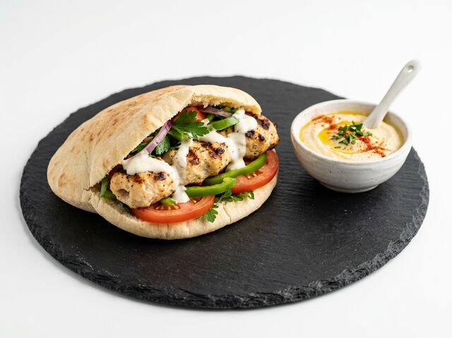
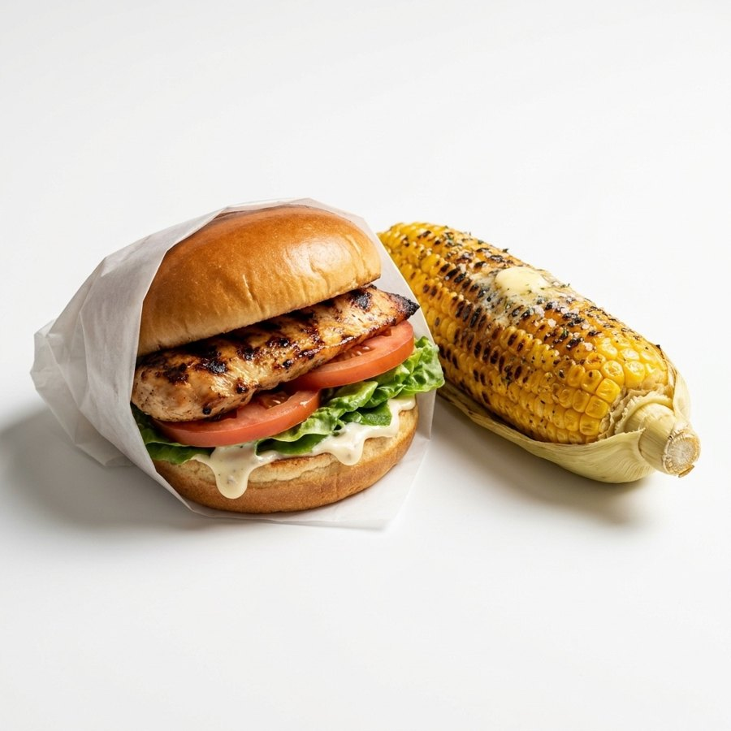
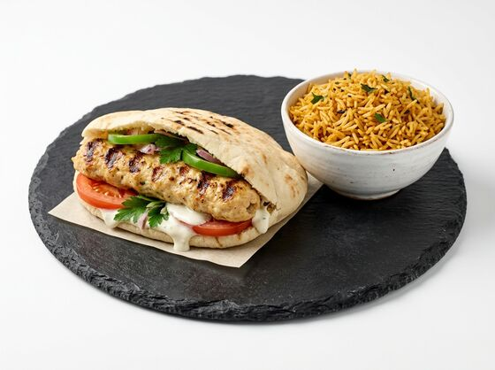


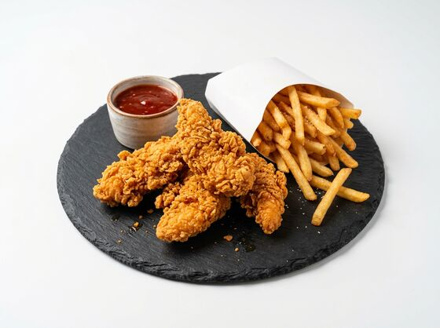

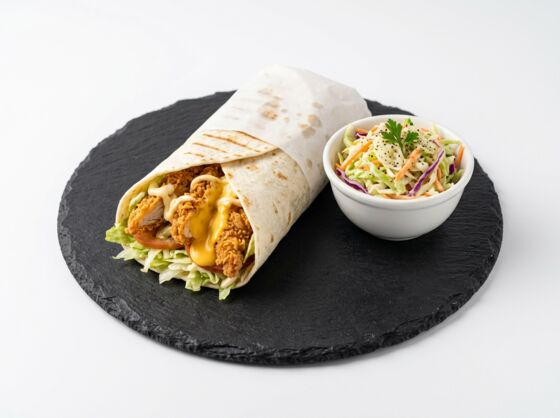

الصور توضيحية.
لا يوجد أي صنف منها في المنيو الحالي، ولا أي مكون جديد. حذفنا ما يطابق أصنافًا قائمة: البطاطس المحمّلة وصحن الكباب الصغير.
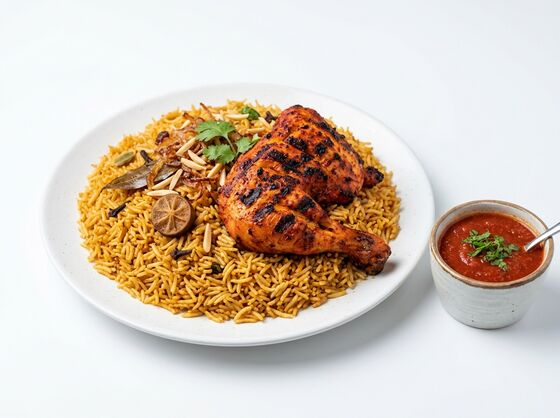
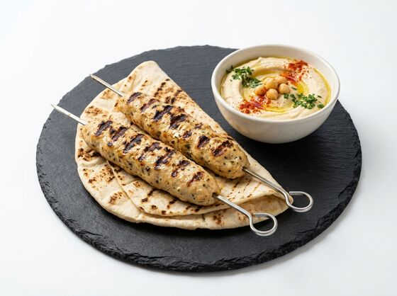


المشوي أولًا ثم المشكّل ثم المقلي.
هذه إجابة مباشرة على قلق السحب من الوجبات: صنف القيمة يصير بوابة للوجبة الأساسية.

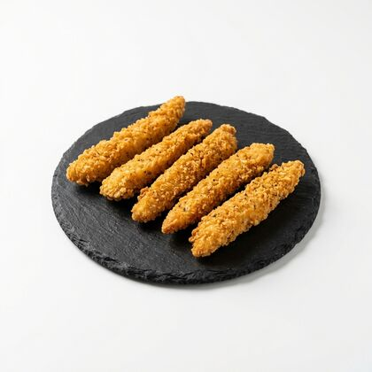
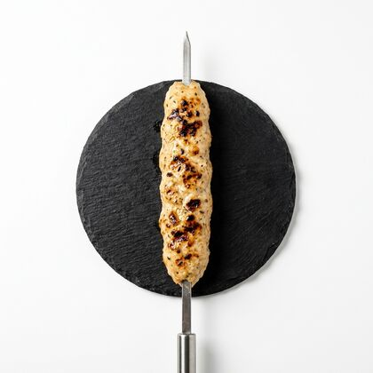
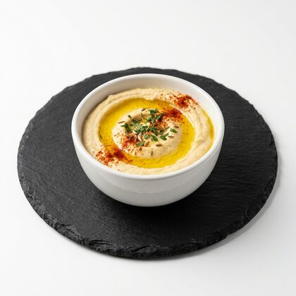

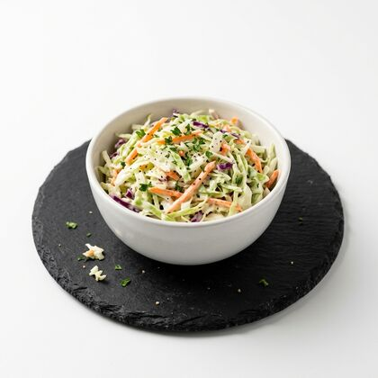

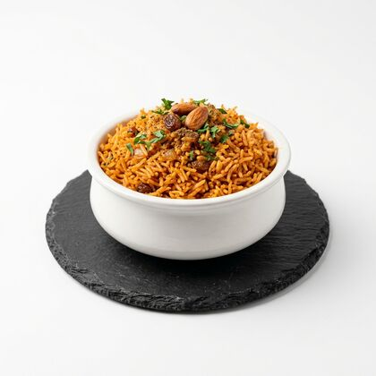
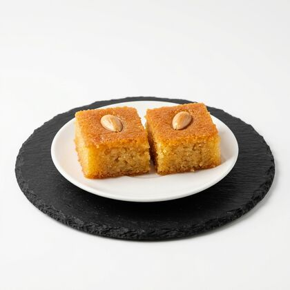
الاختيار نفسه هو اللعبة، لا يحتاج أي صنف جديد.
الخلاصة: 1 و3 جاهزان اليوم. 2 يعطي أصنافًا جديدة بسعر تحكمه الحصة لكنه يحتاج وقتًا.
اقترح التمويل المشترك مع بيبسيكو دون وعد. أسعار الوسط والكبير افتراض حتى يؤكدها الطازج.
كل ضابط له رقم نراقبه. إذا سُئلت "كيف نعرف أنه نجح؟" أشر إلى العمود الأخير.
شكرًا لكم